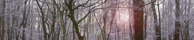
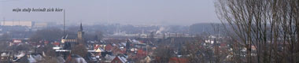
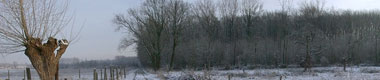
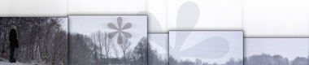
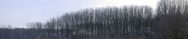

Meer panoziek
zaterdag 3 januari 2004 | Natuur
Ik heb me vandaag ook eens laten gaan op panoramisch gebied. De resultaten zijn misschien niet zo spectaculair als op panoramas.dk, maar zo’n lange foto heeft toch altijd iets apart, vind ik.
Naast de panorama’s heb ik nog een fotografisch nieuwjaarsverslagje online gezet.





dagy op 3 januari 2004
Romantisch, enig die landschappen! De postkaart-opmaak vind ik geweldig leuk.